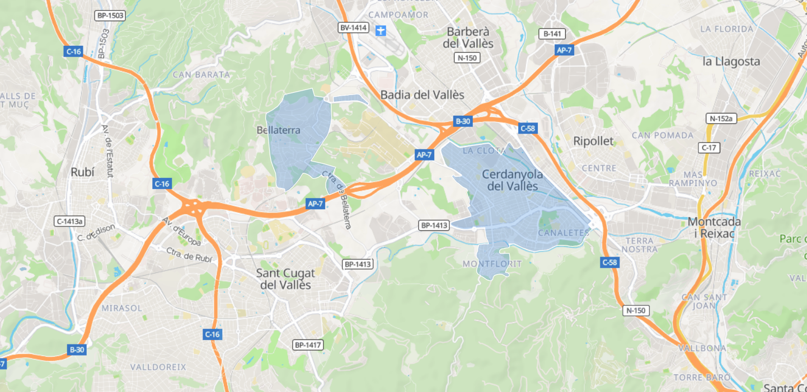
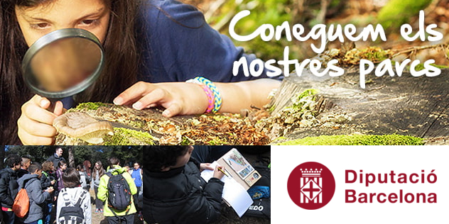
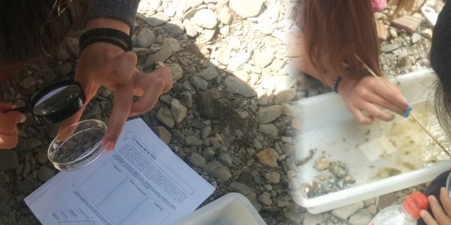
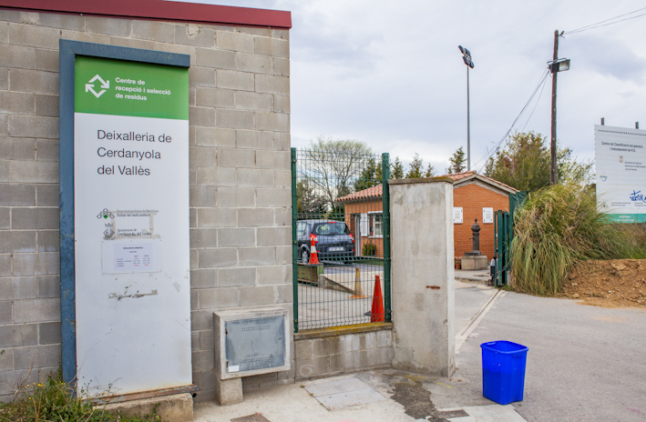
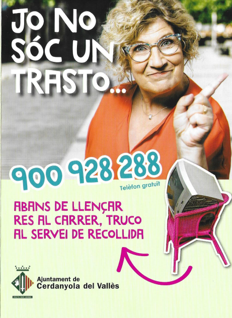
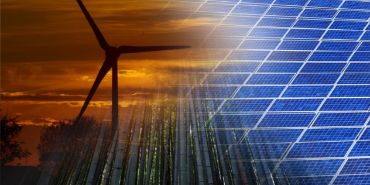
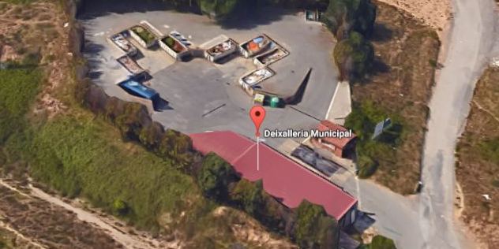
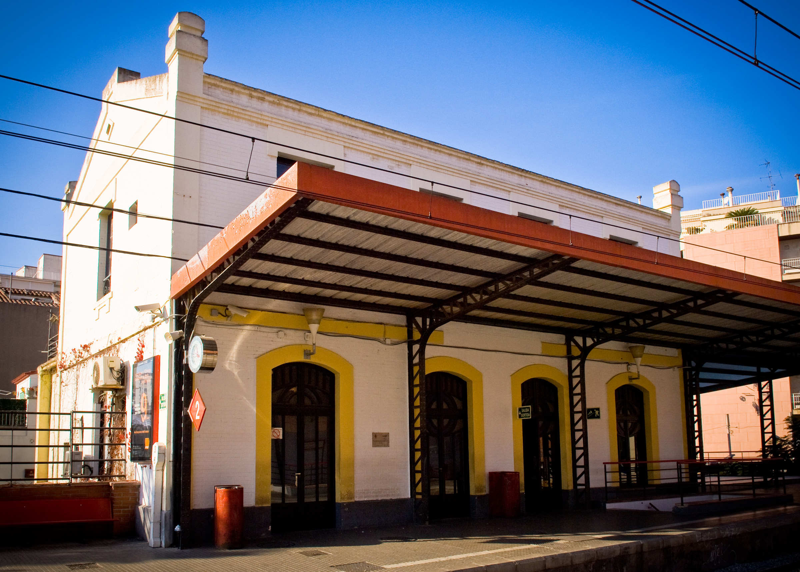
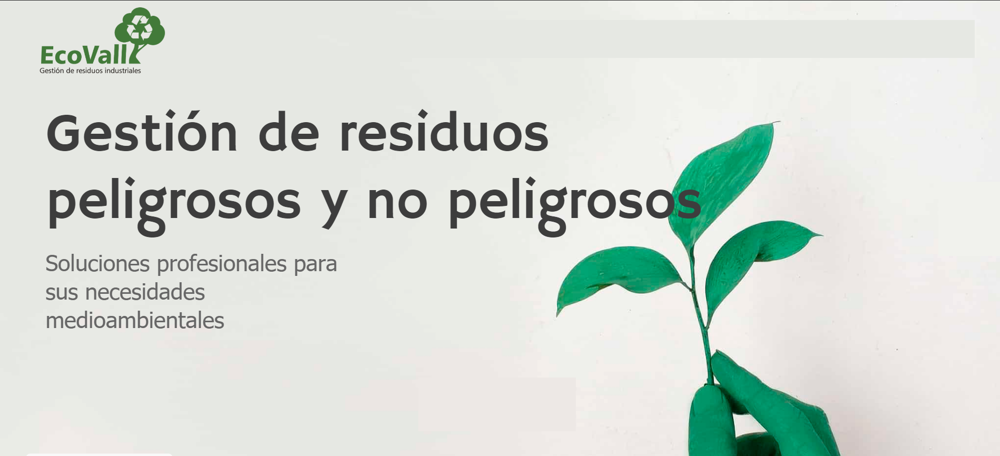
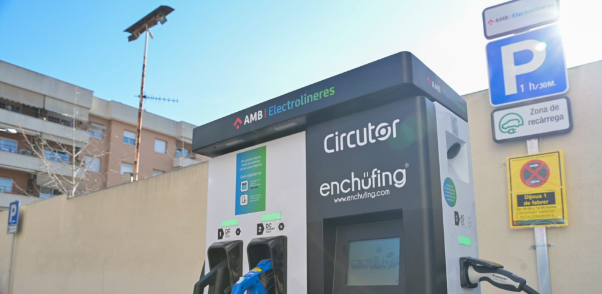

Control d'emissions i regulació per a reduir l'impacte ambiental
Des de l'1 de juliol de 2024 ja està en vigor la Zona de Baixes
Emissions
de
Cerdanyola. No obstant això, no es
va començar a sancionar als vehicles infractors fins a l'1 de gener de 2025.

Només els cotxes amb etiquetes de la DGT Zero (color blau), Eco (color verd i blau), C (color
verd)
i B
(color groc) poden accedir a la ZBE de Cerdanyola del Vallès a qualsevol hora del dia sense
sofrir
cap limitació. Els vehicles que no disposin d'aquestes etiquetes no podran accedir a la
ZBE de
Cerdanyola del Vallès de dilluns a divendres entre les 7 i les 20 h.
Programes d'educació ambiental en col·legis
Itinerari pedagògic, orientat cap als alumnes de 6è de primària, guiat per educadors ambientals
especialitzats
en un dels espais naturals protegits integrats en el programa subvencionat per l'Ajuntament de
Cerdanyola del Vallès
i la Diputació de Barcelona.

Ubicada al Parc Natural del Montseny, l'objectiu principal de l'activitat és promoure el
coneixement
dels espais naturals entre els docents i els escolars de la província de Barcelona,
sensibilitzar
els
nens i les nenes contra la utilització irracional dels recursos naturals, i estimular actituds
més
respectuoses
envers el medi natural.
Conèixer la riera de Sant Cugat
Aquesta activitat, orientada cap als alumnes de 4t de primària i ESO, es tracta d'una visita
guiada
a la riera de Sant
Cugat. Els objectius principals de l'activitat són Descobrir la diversitat de la vegetació de la
riera i detectar-ne
els trets més significatius, aprendre a veure, descripció del paisatge que ens envolta,
afavorir
el desenvolupament
d'actituds com la curiositat, l'interès i el respecte envers el medi, i exercitar l'observació,
la
descripció i la
comparació.

Creació de punts de reciclatge a la ciutat
Cerdanyola del Vallès compta amb una gran varietat d’opcions per a que els
ciutadans siguin responsables amb la gestió de les seves despeses, un dels
més importants es la Deixalleria de Cerdanyola del Vallès.

Ubicada a la Carretera de Cerdanyola a Sant Cugat, km 2,2, aquest recinte
permet als ciutadans portar la seva brossa més “especial”, per a que es
pugui reciclar de manera efectiva.
Brossa que es pot portar: fusta, vidre, electrònica, bateries, electrodomèstics, etc…
Recollida de mobles i voluminosos
Un altre dels serveis proporcionats per l’Ajuntament de Cerdanyola del Vallès
és la recollida de mobles i voluminosos. Per a aquesta gent que no té disponibilitat
per emportar-se mobles o deixalles molt grans, aquest servei acudirà al seu domicili
i l’emportarà a la deixalleria municipal.

Aquest servei té l’objectiu d’evitar l’acumulació de deixalles
al carrer a causa de la incapacitat o peresa dels ciutadans per
emportar-les a la deixalleria. Com diu el seu eslògan, “Abans de
llençar res al carrer, truco al servei de recollida!”.
El Conte del Sol
L'activitat es basa en l'explicació d'una història amb el suport d'elements,
personatges i estris visuals i mòbils. La història vol introduir als alumnes el concepte
d'energia,
i de l'existència de fonts d'energia netes que es poden obtenir de l'energia del sol. La sessió
inclou activitats experimentals amb plaques fotovoltaiques, aerogeneradors i d'altres eines
pedagògiques
sobre energies renovables.

Aquesta activitat, adreçada als alumnes de 2n de primària,
té com a objectius introduir el Sol com a font d'energia que podem captar i utilitzar,
introduir algunes de les eines que ens ho permeten i reflexionar sobre la necessitat de
prioritzar l'ús d'energies renovables per sobre de les no renovables.
¿Què és una Deixalleria?
Conduïda per un educador o educadora, l'activitat inclou la visita a les dependències de la
Deixalleria Municipal.
Adreçada als alumnes de 3r de primària i de l'ESO, té com a objectius conèixer els residus
sòlids urbans i la
problemàtica que comporten, comprendre la importància de la recuperació i la recollida selectiva
per facilitar
el reciclatge i preservar el medi, conèixer la composició de les deixalles i els materials que
poden ser recuperats,
i prendre consciència de per què cal reduir els residus.

Promoció del transport públic
La ciutat de Cerdanyola del Vallès compta amb una àmplia xarxa de transports públics,
tant urbans com interurbans, i tant de dia com de nit. A part dels autobusos,
Cerdanyola del Vallès disposa de quatre parades de tren, dues operades per Renfe
i dues per Ferrocarrils de la Generalitat de Catalunya.

-
Les línies urbanes són:
-
SU 1 (Canaletes-Can Coll)
-
SU 2 (Bellaterra- Ajuntament-Can Cerdà)
-
SU 3 (Renfe-UAB - CAP Canaletes)
-
PA (FGC Bellaterra - Parc de l'Alba)
-
Les línies interurbanes són les següents:
-
Línia 648 (Bellaterra-Montcada)
-
Línia A4 (Barcelona-Sant Cugat)
-
Línia A7 (Barcelona-Cerdanyola) (per la carretera d'Horta)
-
Línia B2 (Sabadell-Ripollet)
-
Línia B4 (Badia-UAB)
-
Línia B5 (Sabadell - Ripollet directe)
-
Línia B7 (Cerdanyola-Rubí)
-
Línia e3 (Barcelona-UAB)
Les línies nocturnes que comuniquen la ciutat:
-
Línia N61 (Sabadell - Barcelona)
-
Línia N62 (Barcelona - Sant Cugat del Vallès)
-
Línia N64 (Barcelona - Sabadell)
Gestió de residus especials a Cerdanyola del Vallès
Cerdanyola del Vallès compta amb una empresa especialitzada en la gestió
de residus especials industrials, tant no perillosos com perillosos.
EcoVall gestiona de manera integral i sostenible aquests residus, s'encarreguen de la recollida,
el transport, la gestió, el processament i la valorització per a convertir-los en productes
reciclats.

Complint la llei, cada material és classificat per al seu correcte reciclatge,
i així ajudar en la conservació del nostre planeta. D'aquesta manera gestionen residus banals,
gestionen i transporten residus especials líquids, sòlids, netegen i desallotgen naus
industrials i
locals, i proporcionen cubetes de retenció i prevenció de vessaments.
Implementació d'energies renovables
A Cerdanyola del Vallès, la xarxa de punts de càrrega per a vehicles elèctrics ha crescut de
manera notable,
aconseguint més de 3.600 estacions disponibles, convertint al municipi com un referent en
infraestructura
per a la mobilitat sostenible.

La instal·lació més destacable en aquest àmbit de Cerdanyola del Vallès és l'electrolinera,
inaugurada al febrer de 2024 al carrer Camp, capaç de proporcionar 50kW, oferint una
càrrega ràpida i eficient.
L'expansió d'aquestes infraestructures indica el cada vegada major compromís de les localitats
per un transport eficient, ràpid, i respectuós amb el medi ambient. Això causa una ràpida
transició cap a mitjans de transport més sostenibles i amigables amb el medi ambient.